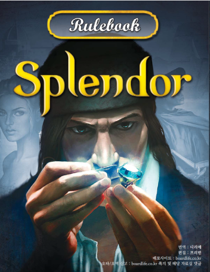

스플렌더의 기본 승점은 15점까지이며 15점을 달성한 사람이 있을 시, 후순위 플레이어까지 차례를 마친 후 최종승점을 계산한다. 만약 최종 점수가 동점이 나왔을 경우엔 개발카드의 장수가 적은 사람, 귀족 타일의 갯수가 많은 사람, 보석토큰의 갯수가 많은 사람, 마지막 차례의 사람이 승리하게 된다.
스플렌더에서의 가능 액션은 다음과 같다. 보석토큰 각각 1개씩 총 3개 가져가기, 같은 색깔 보석토큰 2개 가져가기, 황금토큰으로 카드 한장을 찜하기, 자신이 찜했던 개발카드 또는 열린 개발카드에서 한장 구매하기
